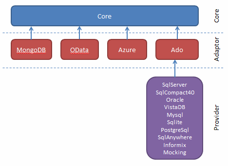

Simple.Data requires
Beyond that it has no dependencies outside of the BCL other than those within its own sphere.

Your project must include references to
The diagram above shows all the currently available adaptors and providers and their dependencies.